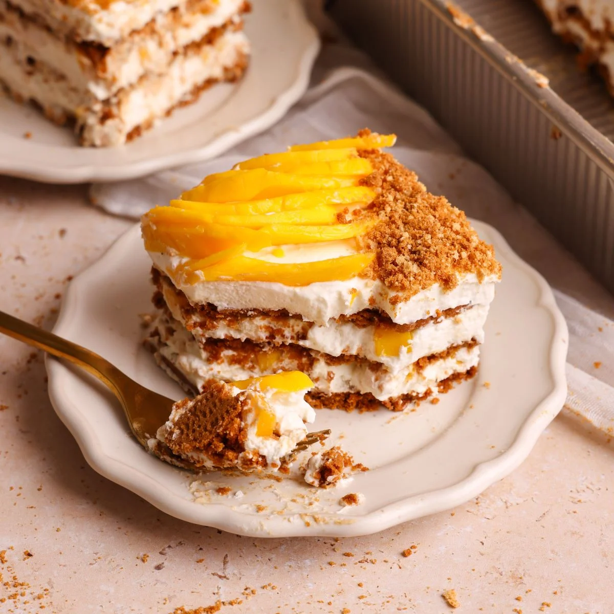

Mango Graham
Home

Description
This is a classic dessert in Philippines. It's mango pieces and condensed milk in between layers of softened graham crackers.
Ingredients
- heavy cream, chilled overnight
- sweetened condensed milk, chilled overnight
- salt
- ripe mangoes
- graham crackers
Steps
- Make sure your mangos are ripe and sweet. Peel the skin and slice mangos thinly or you can chop the mangos. Set aside.
- Whip heavy cream until soft peaks form. Then gradually add pinch of salt and condensed milk. Whip cream until stiff peaks form. Tip: chill the heavy cream, condensed milk, and bowl in the fridge for a few hours or overnight for easy whipped cream!
- Crush graham crackers until desired crumb or use the whole cracker without crushing. I like it crushed for a soft crumble texture.
- Let’s start layering the mango float in a 8 x 8 inch glass container or a large container. First lay the graham crackers. Then, whipped cream. Lastly, add sliced mango. Repeat one more time. For the last layer, add whipped cream and sliced mango. You can also add more graham cracker crumbs at the top for decoration.
- Cover the container and refrigerate overnight for soft texture (like bread pudding). Another option is to freeze overnight for ice cream texture. Before eating, thaw for 30 minutes or less depending on what texture you like.